Aircraft¶
In this section we consider the model of a unmanned vertical take-off
Aircraft. The aircraft has two permanently mounted thrusters on the
wings which can apply the thrust forces  and
and  independently of each other. The two engines are inclined by an angle
independently of each other. The two engines are inclined by an angle
 with respect to the aircraft-fixed axis 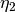
and engage in the points 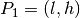 and 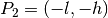.
The coordinates of the center of mass
with respect to the aircraft-fixed axis 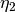
and engage in the points 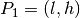 and 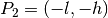.
The coordinates of the center of mass  of the aircraft in the
inertial system are denoted by
of the aircraft in the
inertial system are denoted by  and
and  . At the same
time, the point is the origin of the plane coordinate system. The
aircraft axes are rotated by the angle
. At the same
time, the point is the origin of the plane coordinate system. The
aircraft axes are rotated by the angle  with respect to
the -axis.
with respect to
the -axis.

Through the establishment of the momentum balances for the model one obtains the equations

With the state vector 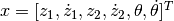 and 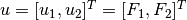 the state space representation of the system is as follows.
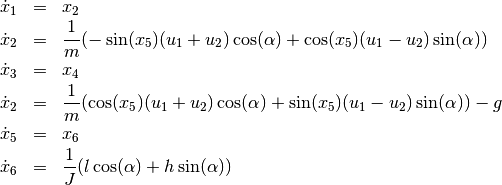
For the aircraft, a trajectory should be planned that translates the
horizontally aligned flying object from a rest position (hovering) along
the and axis back into a hovering position.
The hovering is to be realized on the boundary conditions of the input.
Therefor the derivatives of the state variables should satisfy the
following conditions.
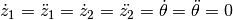
For the horizontal position applies 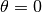. These demands yield the boundary conditions for the inputs.

# vertical take-off aircraft
# import trajectory class and necessary dependencies
from pytrajectory import Trajectory
from sympy import sin, cos
import numpy as np
from numpy import pi
# define the function that returns the vectorfield
def f(x,u):
x1, x2, x3, x4, x5, x6 = x # system state variables
u1, u2 = u # input variables
# coordinates for the points in which the engines engage [m]
l = 1.0
h = 0.1
g = 9.81 # graviational acceleration [m/s^2]
M = 50.0 # mass of the aircraft [kg]
J = 25.0 # moment of inertia about M [kg*m^2]
alpha = 5/360.0*2*pi # deflection of the engines
sa = sin(alpha)
ca = cos(alpha)
s = sin(x5)
c = cos(x5)
ff = np.array([ x2,
-s/M*(u1+u2) + c/M*(u1-u2)*sa,
x4,
-g+c/M*(u1+u2) +s/M*(u1-u2)*sa ,
x6,
1/J*(u1-u2)*(l*ca+h*sa)])
return ff
# system state boundary values for a = 0.0 [s] and b = 3.0 [s]
xa = [ 0.0, 0.0, 0.0, 0.0, 0.0, 0.0]
xb = [10.0, 0.0, 5.0, 0.0, 0.0, 0.0]
# boundary values for the inputs
g = [0.5*9.81*50.0/(cos(5/360.0*2*pi)),
0.5*9.81*50.0/(cos(5/360.0*2*pi))]
# create trajectory object
T = Trajectory(f, a=0.0, b=3.0, xa=xa, xb=xb, g=g)
# don't take advantage of the system structure (integrator chains)
# (this will result in a faster solution here)
T.setParam('use_chains', False)
# also alter some other method parameters to increase performance
T.setParam('kx', 5)
# run iteration
T.startIteration()
# show results
T.plot()